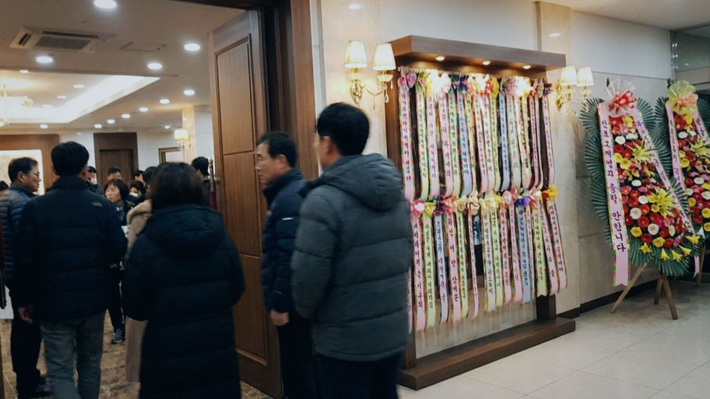
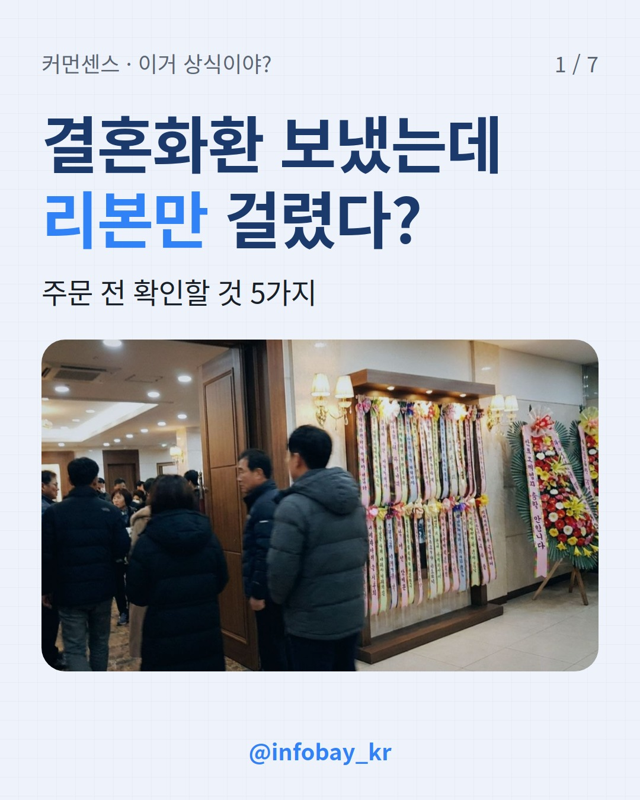
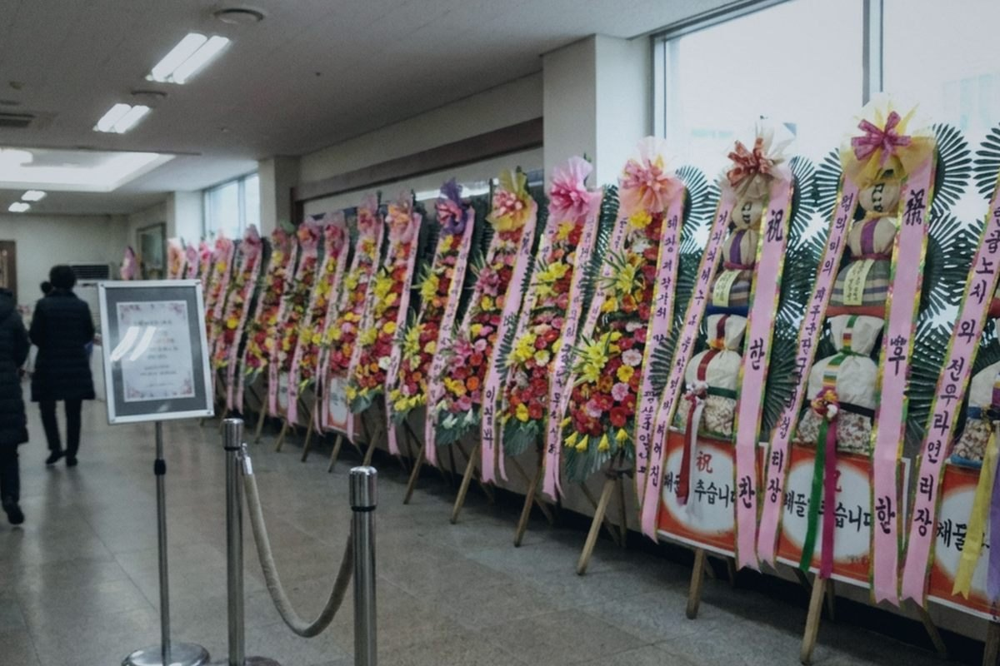

결혼식에 화환을 보내려는 분이라면 주문하기 전에 식장이 외부 화환을 받는지부터 물어보세요.
한 줄 결론: 외부 생화 화환을 안 받고 리본만 떼어 걸어 둔 예식장이 실제로 있었어요. 식장 문의부터 리본 문구까지 5가지만 확인하면 돼요.

식장이 외부 화환을 받지 않으면 이런 일이 생겨요. 2021년 뉴스1 보도를 보면 충북 청주의 일부 대형 예식장이 외부 생화 화환을 막고 협력업체의 쌀화환을 권했어요. 미리 조율하지 않은 화환이 들어오면 리본만 떼어 걸었고, 외부 화환 처리를 협력업체에 맡긴다는 위임장을 고객에게 받은 곳도 있었어요.
막을 방법도 마땅치 않아요. 당시 보도는 관련 법령이 없고 민간 계약이라 규제가 어렵다고 짚었어요. 보내는 쪽이 미리 확인할 수밖에 없어요.
틀린 말이에요. 화훼산업법은 한 번 쓴 꽃으로 만든 화환에 '재사용' 표시를 하라는 법이고, 화환 반입을 막는 조항은 없어요. 2020년 법 시행 직후 "법이 바뀌어 반입이 안 되고 어기면 과태료 1,000만원"이라고 안내한 식장이 있었는데, 농림축산식품부는 이를 허위사실 유포 사례로 보고 지자체에 지도 협조 공문을 보냈어요.
다만 농식품부도 반입을 강제할 수는 없다고 했어요. 식장이 자기 방침으로 안 받는 것까지 막기는 어렵다는 뜻이에요.
한 번 쓴 생화를 다시 쓴 화환은 앞면에 '재사용 화환'이라고 적어야 해요. 2020년 8월 21일부터 시행 중인 의무이고, 판매자 상호와 전화번호도 함께 적어야 해요. 온라인에서 팔 때도 똑같이 표시해야 해요.
| 위반 횟수(최근 1년) | 판매업체 과태료 |
|---|---|
| 1회 | 300만원 |
| 2회 | 600만원 |
| 3회 이상 | 1,000만원 |
한계도 있어요. 농민신문이 2024년에 보도한 농관원 자료를 보면 2020년부터 2023년까지 적발은 160건뿐이었어요. 표시가 없다고 새 꽃이라는 보장은 없으니 리뷰와 화원 정보도 같이 보세요.

3단 화환은 화원마다 값이 달라서 2026년 11월 기준 4만9천원부터 14만원까지 나와요. 아래는 화원 두 곳이 공개한 판매가예요.
| 종류 | 판매가 | 화원 |
|---|---|---|
| 3단 기본 | 49,000~59,000원 | 정성꽃배달 |
| 3단 일반 | 90,000원 | 축하화환.kr |
| 3단 특 | 140,000원 | 축하화환.kr |
| 쌀화환 10kg | 110,000원 | 축하화환.kr |
| 쌀화환 20kg | 150,000원 | 축하화환.kr |
단수는 정해진 규칙이 없으니 관계와 예산에 맞추면 돼요.
식장이 생화를 안 받으면 쌀화환을 보내고, 둘 다 받는 식장이면 고르면 돼요. 차이는 행사가 끝난 뒤에 생겨요.
| 기준 | 생화 화환 | 쌀화환 |
|---|---|---|
| 행사 후 | 대부분 폐기 | 쌀을 복지기관 등에 기부 |
| 확인할 것 | 재사용 화환 표시 | 기부처, 기부 확인서 발급 여부 |
| 이런 경우 | 식장이 생화를 받을 때 | 신랑·신부가 쌀을 원할 때 |
2026년 3월 수원의 한 결혼식에는 쌀 기부형 화환 102개가 와서 쌀 약 1,100kg이 모였고, 기부 영수증은 신부 이름으로 발급됐어요. 6월에는 서울 중랑구의 신혼부부가 하객에게 미리 쌀을 부탁해서 820kg을 기부했어요. 기부처는 화원마다 다르니 주문할 때 물어보세요.

화원들은 보통 신랑 쪽에는 祝結婚(축결혼), 신부 쪽에는 祝華婚(축화혼)을 쓰라고 안내해요. 법으로 정해진 건 아니라서 한글로 "결혼을 진심으로 축하드립니다"라고 써도 무난해요. 리본 한쪽에는 축하 문구를, 다른 쪽에는 보내는 사람 이름을 적어요.
| 보내는 사람 | 축하 문구 예 | 이름 리본 예 |
|---|---|---|
| 친구 | 결혼 축하해, 행복하게 살아 | 친구 ○○○ |
| 직장 동료 | 결혼을 진심으로 축하드립니다 | ○○팀 일동 |
| 회사·거래처 | 祝結婚 / 祝華婚 | ○○주식회사 대표이사 ○○○ |
웃긴 문구는 가까운 친구 사이에서만 쓰세요. 양가 어른들도 식장 입구에서 다 읽어요.
청첩장에 "화환은 정중히 사양합니다"라고 적혀 있으면 보내지 않는 게 맞아요.
Q. 화환은 몇 시까지 도착해야 하나요?
화원들은 예식 2~3시간 전, 늦어도 1시간 전 도착을 안내해요. 주문할 때 예식 시간과 홀 이름을 정확히 적어 주세요.
Q. 화환을 보내면 축의금은 안 해도 되나요?
정해진 기준은 없어요. 액수 고민은 축의금 얼마? 평균 11만7천원인데 제일 많이 낸 금액은 5만원에 따로 정리했어요.
Q. 장례식장도 화환을 마음대로 처분하나요?
2026년 8월 개정된 장례식장 표준약관은 조문객이 보낸 화환을 유족 소유로 보고, 처리하려면 유족과 미리 협의하도록 했어요. 예식장에 같은 조항이 생겼는지는 확인하지 못했어요. 조문 예절은 장례식 조문 예절 실수 6가지에 있어요.
다음에 할 일: 청첩장을 받으면 화환 주문 전에 신랑·신부에게 "화환 받는 식장이야?" 한 줄만 보내 보세요.
이 상황, 당신은? 청첩장에 '화환 사양'이라고 적혀 있어도 친한 친구라면 보내는 게 맞을까요? 커먼센스에서 투표해 보세요.
2026년 11월 기준으로 법령, 관련 보도, 화원 공개 판매가를 확인했어요.